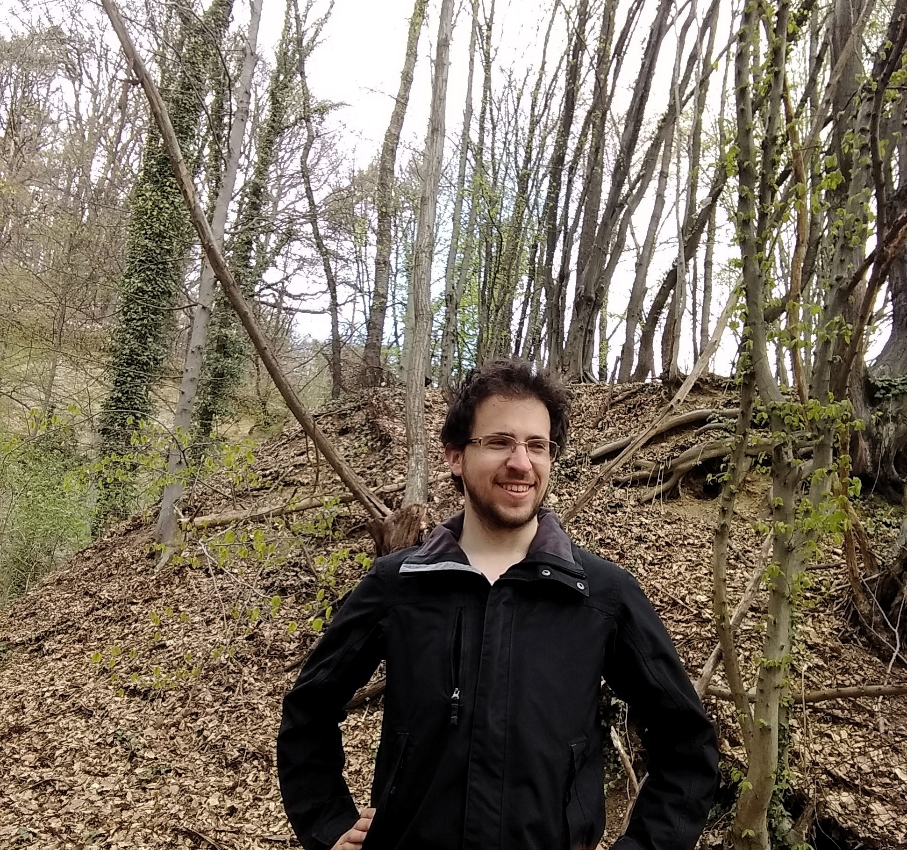
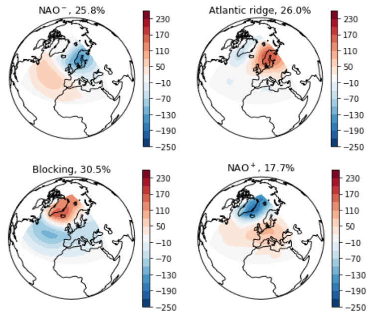
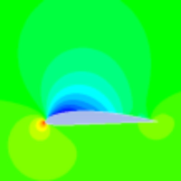

Jérôme Cavaillès
Je suis un mathématicien en doctorat en biologie/écologie. Ma recherche se concentre sur le développement de modèles mathématiques pour comprendre la structure des écosystèmes face aux changements environnementaux.
Mon objectif ultime est de contribuer à une théorie transdisciplinaire des systèmes dans des environnements changeants. Mon approche consiste à résoudre des problèmes spécifiques dans des domaines comme l'écologie, idéalement avec des applications pratiques pour la vie quotidienne. Pas à pas, j'espère assimiler différents concepts, tels que les perturbations ou l'autorégulation, dans un cadre mathématique plus général.
Mon objectif ultime est de contribuer à une théorie transdisciplinaire des systèmes dans des environnements changeants. Mon approche consiste à résoudre des problèmes spécifiques dans des domaines comme l'écologie, idéalement avec des applications pratiques pour la vie quotidienne. Pas à pas, j'espère assimiler différents concepts, tels que les perturbations ou l'autorégulation, dans un cadre mathématique plus général.

Ce que je fais en thèse
Recherche
J'étudie l'écologie ...
L'écologie, en tant que discipline scientifique, explore les interactions entre les êtres vivants et leur environnement. Je m'intéresse particulièrement à la manière dont les individus s'organisent en réponse aux changements environnementaux. Cela implique d'explorer les relations dynamiques entre les organismes et leur environnement, en mettant l'accent sur les stratégies d'adaptation et la résilience des systèmes écologiques face aux changements environnementaux.


... à l'aide de modèles mathématiques
Un modèle mathématique est une représentation abstraite d'un système tangible, utilisant des concepts et un langage mathématiques. Il permet d'expliquer le système, d'examiner l'impact des différents composants et de faire des prédictions sur son comportement.
J'utilise diverses formes de modèles, notamment la théorie des jeux et les systèmes dynamiques. En outre, je m'intéresse vivement à l'exploration d'autres types de modèles tels que la théorie de l'information, la théorie des réseaux, la théorie de la décision, la théorie du contrôle et la théorie des catégories.
J'utilise diverses formes de modèles, notamment la théorie des jeux et les systèmes dynamiques. En outre, je m'intéresse vivement à l'exploration d'autres types de modèles tels que la théorie de l'information, la théorie des réseaux, la théorie de la décision, la théorie du contrôle et la théorie des catégories.
Mes précédentes expériences professionnelles
Stages
CNRS (2019)
Effets déstabilisants du contrôle du comportement des écosystèmes
J'ai étudié les implications de l'intervention humaine dans la stabilisation de la dynamique des écosystèmes, en explorant la possibilité que certaines interventions, en particulier la réduction des mesures de stabilité communes telles que la variabilité temporelle, puissent par inadvertance augmenter le risque d'événements extrêmes, tels que l'effondrement de l'écosystème.

WeatherForce (2018)
Statistiques pour la météo
Étude de la classification en régimes de temps et de leurs impacts pour des utilisations métiers. Développement d'outils dédiés à la classification d'une journée. Évaluation de leurs impacts sur des variables utilisateurs.
Formations
INSA Toulouse
Ecole d'ingénieur
Lors de ma formation, j'ai principalement développé mes compétences dans les domaines de la modélisation, de la simulation et de l'optimisation. À droite, on peut voir une simulation réalisée en cours de mécanique des fluides, illustrant la pression au-dessus d'une aile d'avion.
